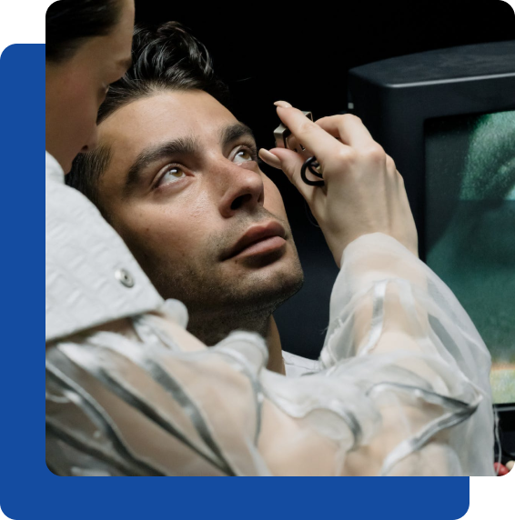

Private Eye Tests in Epping
It takes time to check your eyes thoroughly, carrying out all the tests to ensure your eyes are
healthy and to investigate any symptoms you’re having.
Most important is the time to explain the results of your eye exam and to discuss any concerns
you may have regarding your eyes.